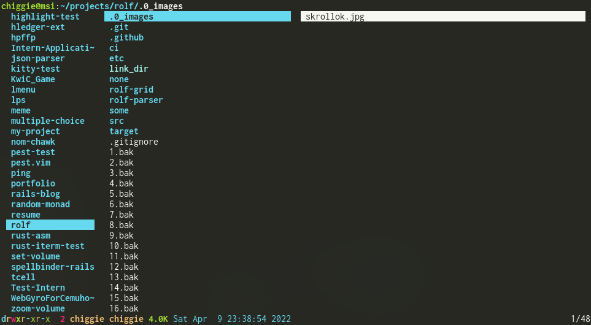
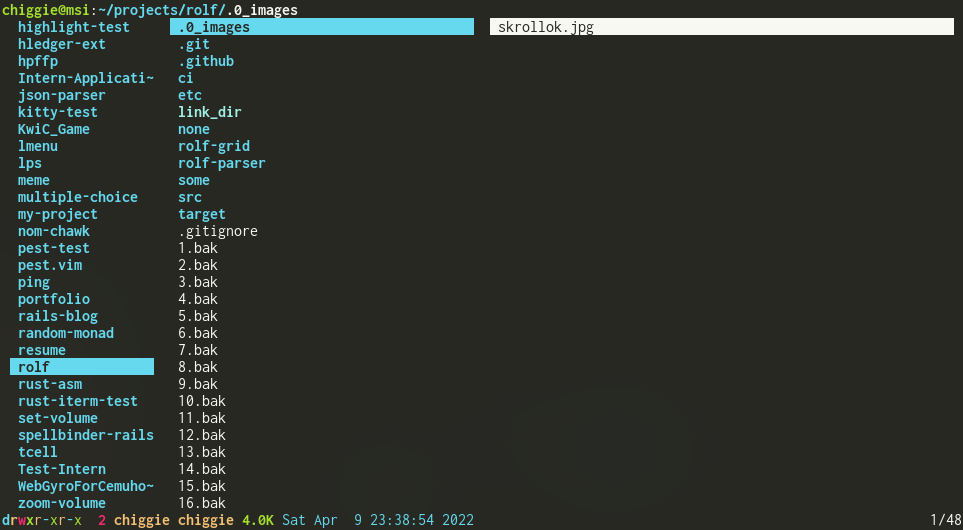

Hi, I'm Chris.
A software engineer with a focus on game development and command-line tools.
A cooperative, side-scrolling shoot-'em-up game in 2D. Playable via website. Local co-op with controllers or keyboard splitting.
For this project, I...
Unity, Visual Studio, bash, GitHub Actions
A terminal file manager which displays images with the kitty image protocol. Shows the previous directory, current directory, and previews in a three-pane layout.
This was a solo effort, so I handled all aspects of this project myself, including:
Rust, vim, GitHub Actions
 

A variant of the unix command-line tool awk. Provides a domain-specific, turing-complete text processing and data extraction language. This language is a subset of awk's domain-specific language, but it contains the additional feature of block-scoped variables. This was a solo project.
A partially-implemented screen-saver program which pulls images from Instagram and Reddit and displays them in a timed slideshow. I handled the Instagram API, parts of the front-end pertaining to Instagram, and testing on both Windows and Linux.
A CLI program which parses dice notation (as used in Dungeons & Dragons) and simulates dice rolls accordingly, using a BNFC grammar and a monadic random number generation API. This was a solo project.
An incomplete implementation of the Spellbinder game using Ruby on Rails. Styled with Bootstrap. Has working authentication and form input, as well as a subset of the Spellbinder ruleset. This was a solo project.
A crude handwritten 2D renderer built with OpenGL and C++. I implemented simple text rendering and primitive UI elements.